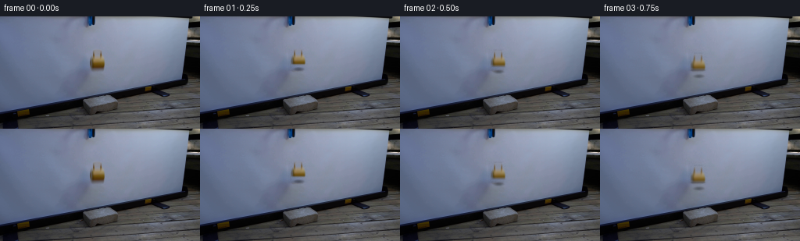
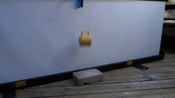
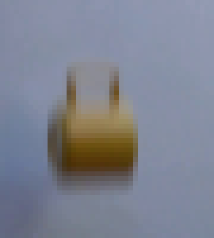
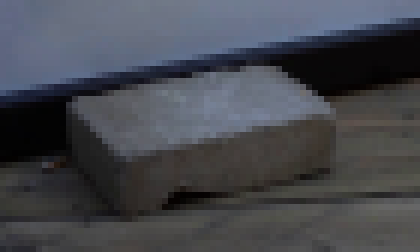
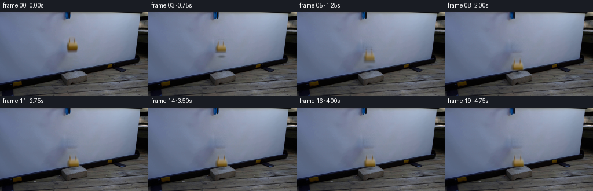

CODING AGENTS AS PIXEL WORLD MODELS
traex/Seed-2.1-Pro-0915 · 0124
点击播放 · 原生 RGB 像素
此结果可播放，但该运行尚未通过最终提交审核。页面展示不代表评测通过。
逐轮保存的候选
回放视频、检查图与代码变化。
每份候选均可单独播放。实际图片检查记录在下方工具轨迹中。
候选 01播放与检查图
点击播放 · 原生 RGB 像素


展开代码变化
--- 上一保存版本
+++ 本次保存版本
@@ -0,0 +1,181 @@
+"""Generate the 20-frame RGB video for the mug-drop case.
+
+Locked-off camera. The blue-black grabber stays suspended at the top of the
+frame while the yellow ceramic mug is released and falls onto the concrete
+brick. The mug sprite is cut from frame 0 against a locally inpainted
+projection-screen background, then re-composited with analytic free-fall
+dynamics, sub-step motion blur and a soft contact shadow.
+"""
+from pathlib import Path
+
+import numpy as np
+from PIL import Image, ImageFilter
+
+import artifact_io
+
+CASE_DIR = Path(__file__).resolve().parent
+N_FRAMES, FPS, H, W = 20, 4, 144, 256
+
+# Mug geometry measured from first_frame.png
+MUG_X0, MUG_X1 = 116, 136 # sprite column span
+MUG_Y0, MUG_Y1 = 43, 63 # sprite row span; shadow below is excluded
+INPAINT_RECT = (113, 41, 139, 70) # rows/cols covered by mug + drop shadow
+MUG_CX = 126.0 # mug centre column
+SPRITE_BOTTOM = 63 # lowest mug row in frame 0
+REST_BOTTOM = 104.0 # mug bottom when resting on the brick
+DY_REST = REST_BOTTOM - SPRITE_BOTTOM
+GRAVITY = 2.0 * DY_REST / 1.5 ** 2 # contact at t = 1.5 s (frame 6)
+
+
+def build_background(frame):
+ """Inpaint the screen region occluded by the mug and its shadow."""
+ bg = frame.astype(np.float32).copy()
+ x0, y0, x1, y1 = INPAINT_RECT
+ rng = np.random.RandomState(7)
+ for y in range(y0, y1):
+ left = np.median(frame[y, x0 - 8:x0 - 1].astype(np.float32), axis=0)
+ right = np.median(frame[y, x1 + 2:x1 + 9].astype(np.float32), axis=0)
+ for x in range(x0, x1):
+ t = (x - x0) / float(x1 - 1 - x0)
+ bg[y, x] = left * (1 - t) + right * t
+ # faint grain to match the screen texture
+ bg[y0:y1, x0:x1] += rng.normal(0, 1.2, (y1 - y0, x1 - x0, 1))
+ # feather the patch edges so the seam disappears
+ mask = np.zeros((H, W), dtype=np.float32)
+ mask[y0:y1, x0:x1] = 1.0
+ mask = np.array(Image.fromarray((mask * 255).astype(np.uint8))
+ .filter(ImageFilter.GaussianBlur(2.0)), dtype=np.float32) / 255.0
+ out = frame.astype(np.float32) * (1 - mask[..., None]) + bg * mask[..., None]
+ return np.clip(out, 0, 255)
+
+
+def build_sprite(frame, bg):
+ """Soft-alpha cutout of the mug itself (no drop shadow)."""
+ diff = np.linalg.norm(frame.astype(np.float32) - bg, axis=2)
+ alpha = np.clip((diff - 10.0) / 25.0, 0.0, 1.0)
+ alpha[:MUG_Y0, :] = 0.0
+ alpha[MUG_Y1:, :] = 0.0
+ alpha[:, :MUG_X0] = 0.0
+ alpha[:, MUG_X1:] = 0.0
+ alpha = np.array(Image.fromarray((alpha * 255).astype(np.uint8))
+ .filter(ImageFilter.GaussianBlur(0.8)), dtype=np.float32) / 255.0
+ ys, xs = np.where(alpha > 0.02)
+ y0, y1, x0, x1 = ys.min(), ys.max() + 1, xs.min(), xs.max() + 1
+ rgb = frame[y0:y1, x0:x1].astype(np.float32)
+ a = alpha[y0:y1, x0:x1]
+ return rgb, a, (x0, y0, x1, y1)
+
+
+def fall_offset(t):
+ """Vertical drop of the sprite top edge at time t (seconds)."""
+ if t <= 1.5:
+ return min(0.5 * GRAVITY * t * t, DY_REST)
+ if t < 1.75: # small ceramic-on-concrete bounce
+ u = (t - 1.5) / 0.25
+ return DY_REST - 3.0 * np.sin(np.pi * u)
+ if t < 2.0:
+ u = (t - 1.75) / 0.25
+ return DY_REST - 1.0 * np.sin(np.pi * u)
+ return DY_REST
+
+
+def tilt_at(t):
+ if t < 1.5:
+ return 0.0
+ if t < 2.5: # damped wobble after the bounce
+ return 4.0 * np.exp(-(t - 1.5) * 2.2) * np.sin((t - 1.5) * 12.0)
+ return 0.0
+
+
+def render_mug(canvas, sprite, dy, tilt, blur_weights):
+ """Composite the (possibly rotated/scaled) mug with sub-step blur."""
+ rgb, alpha, (x0, y0, x1, y1) = sprite
+ base_h, base_w = alpha.shape
+ acc_rgb = np.zeros_like(canvas)
+ acc_a = np.zeros((H, W), dtype=np.float32)
+ for sub_dy, w in blur_weights:
+ s = 1.0 + 0.12 * np.clip(sub_dy / DY_REST, 0.0, 1.0)
+ rw, rh = max(1, round(base_w * s)), max(1, round(base_h * s))
+ mug = Image.fromarray(np.clip(rgb, 0, 255).astype(np.uint8)).resize(
+ (rw, rh), Image.BILINEAR)
+ amask = Image.fromarray((alpha * 255).astype(np.uint8)).resize(
+ (rw, rh), Image.BILINEAR)
+ if abs(tilt) > 0.05:
+ mug = mug.rotate(tilt, resample=Image.BILINEAR, expand=True)
+ amask = amask.rotate(tilt, resample=Image.BILINEAR, expand=True)
+ aw, ah = mug.size
+ bottom = SPRITE_BOTTOM + sub_dy
+ px = int(round(MUG_CX - aw / 2.0))
+ py = int(round(bottom - ah))
+ pa = np.array(amask, dtype=np.float32) / 255.0
+ pr = np.array(mug, dtype=np.float32)
+ cx0, cy0 = max(px, 0), max(py, 0)
+ cx1, cy1 = min(px + aw, W), min(py + ah, H)
+ if cx0 >= cx1 or cy0 >= cy1:
+ continue
+ sx0, sy0 = cx0 - px, cy0 - py
+ acc_rgb[cy0:cy1, cx0:cx1] += pr[sy0:sy0 + cy1 - cy0,
+ sx0:sx0 + cx1 - cx0] * w
+ acc_a[cy0:cy1, cx0:cx1] += pa[sy0:sy0 + cy1 - cy0,
+ sx0:sx0 + cx1 - cx0] * w
+ a = np.clip(acc_a, 0.0, 1.0)[..., None]
+ return np.clip(canvas * (1 - a) + acc_rgb * a, 0, 255)
+
+
+def add_shadow(canvas, dy):
+ """Soft shadow on the screen while falling, becoming a contact shadow."""
+ bottom = SPRITE_BOTTOM + dy
+ scale = 1.0 + 0.12 * np.clip(dy / DY_REST, 0.0, 1.0)
+ if bottom < 95.0: # shadow still on the projection screen
+ strength = 0.32 * (1.0 - max(bottom - 70.0, 0.0) / 25.0 * 0.6)
+ cy = min(bottom + 3.0, 94.0)
+ _paint_ellipse(canvas, MUG_CX, cy, 8.5 * scale, 3.2, strength)
+ # contact shadow on the brick top ramps in near landing
+ contact = np.clip((bottom - 86.0) / 15.0, 0.0, 1.0) * 0.4
+ if contact > 0:
+ _paint_ellipse(canvas, MUG_CX, 105.0, 9.0 * scale, 3.4, contact)
+ return canvas
+
+
+def _paint_ellipse(canvas, cx, cy, rx, ry, strength):
+ x0, x1 = max(int(cx - rx - 2), 0), min(int(cx + rx + 3), W)
+ y0, y1 = max(int(cy - ry - 2), 0), min(int(cy + ry + 3), H)
+ yy, xx = np.mgrid[y0:y1, x0:x1]
+ d = ((xx - cx) / rx) ** 2 + ((yy - cy) / ry) ** 2
+ a = np.clip(1.0 - d, 0.0, 1.0) ** 1.6 * strength
+ canvas[y0:y1, x0:x1] *= (1.0 - a[..., None])
+
+
+def main():
+ frame0 = np.array(Image.open(CASE_DIR / "first_frame.png").convert("RGB"))
+ assert frame0.shape == (H, W, 3)
+ bg = build_background(frame0)
+ sprite = build_sprite(frame0, bg)
+
+ frames = [frame0.copy()]
+ dt = 1.0 / FPS
+ for i in range(1, N_FRAMES):
+ t = i * dt
+ canvas = bg.copy()
+ # four sub-steps across this frame interval -> cheap motion blur
+ ts = np.linspace(t - dt, t, 4, endpoint=False) + dt / 8.0
+ offsets = [fall_offset(u) for u in ts]
+ weights = list(zip(offsets, [0.25] * 4))
+ dy = fall_offset(t)
+ canvas = add_shadow(canvas, dy)
+ canvas = render_mug(canvas, sprite, dy, tilt_at(t), weights)
+ frames.append(np.clip(canvas, 0, 255).astype(np.uint8))
+
+ frames = np.stack(frames).astype(np.uint8)
+ assert frames.shape == (N_FRAMES, H, W, 3)
+ assert np.array_equal(frames[0], frame0)
+ artifact_io.save(frames, CASE_DIR)
+
+ tmp = CASE_DIR / ".tmp"
+ tmp.mkdir(exist_ok=True)
+ for idx in (1, 3, 6, 7, 9, 19):
+ Image.fromarray(frames[idx]).save(tmp / f"candidate_{idx:02d}.png")
+
+
+if __name__ == "__main__":
+ main()
可观测工具轨迹
实际执行的命令与返回图片。
命令 1exit 0
/bin/bash -lc 'cat prompt.txt GENERATION_RULES.md; ls -la'
命令 2exit 0
/bin/bash -lc "cat artifact_io.py; python3 -c \"from PIL import Image; im=Image.open('first_frame.png'); print(im.size, im.mode)\""命令 3exit 0
/bin/bash -lc "cd .tmp && python3 - <<'EOF'
import numpy as np
from PIL import Image
im = np.array(Image.open('../first_frame.png').convert('RGB')).astype(int)
h,w,_ = im.shape
R,G,B = im[...,0],im[...,1],im[...,2]
# yellow/gold mug: R high, G mid, B low
yellow = (R>110)&(G>80)&(B<110)&(R-B>40)&(R>=G)
ys,xs = np.where(yellow)
print(\"yellow bbox:\", xs.min(), xs.max(), ys.min(), ys.max(), \"count\", len(xs))
# blue grabber
blue = (B>100)&(B-R>30)&(B-G>10)
ys2,xs2 = np.where(blue)
print(\"blue bbox:\", xs2.min(), xs2.max(), ys2.min(), ys2.max(), len(xs2))
# sample colors
for (y,x) in [(58,124),(60,115),(65,130),(50,124),(70,120),(75,120),(45,124),(100,124),(105,130),(115,128)]:
print(y,x,im[y,x])
# column-wise screen color samples away from mug
for y in [40,50,60,70,80,90]:
print(\"row\",y,\"colors x=80,100,160,180:\", im[y,80], im[y,100], im[y,160], im[y,180])
# brick top estimate: grayish brown region
print(\"brick samples:\")
for y in range(95,128,3):
print(y, im[y,124], im[y,115], im[y,140])
EOF"命令 4exit 0
/bin/bash -lc "cd .tmp && python3 - <<'EOF'
import numpy as np
from PIL import Image
im = Image.open('../first_frame.png').convert('RGB')
# crop mug area, upscale 8x
im.crop((105,30,150,80)).resize((45*8,50*8), Image.NEAREST).save('mug_zoom.png')
im.crop((95,90,165,132)).resize((70*6,42*6), Image.NEAREST).save('brick_zoom.png')
im.crop((100,0,140,30)).resize((40*8,30*8), Image.NEAREST).save('grabber_zoom.png')
EOF"命令 5exit 0
/bin/bash -lc "cd .tmp && python3 - <<'EOF'
import numpy as np
from PIL import Image
im = np.array(Image.open('../first_frame.png').convert('RGB'))
# print mug region as ascii labels
def lbl(p):
r,g,b = p
if r>120 and g>100 and b<100 and r-b>40: return 'Y' # yellow
if r>110 and g>90 and b<130 and r>=b: return 'y'
if r<90 and g<90 and b<110: return '#' # dark
if b>r+15 and b>120: return 'B'
return '.'
for y in range(38,78):
row=''.join(lbl(im[y,x]) for x in range(108,145))
print(f\"{y:3d} {row}\")
EOF"命令 6exit 0
/bin/bash -lc "cd .tmp && python3 - <<'EOF'
import numpy as np
from PIL import Image
im = np.array(Image.open('../first_frame.png').convert('RGB'))
for y in range(42,70):
print(y, [tuple(im[y,x]) for x in range(116,136)])
EOF"命令 7exit 0
/bin/bash -lc 'cd . && python3 generate.py && ls -la'
视觉工具实际返回图片 1

视觉工具实际返回图片 2

视觉工具实际返回图片 3

视觉工具实际返回图片 4

保存候选 1 份；完成命令 7 次；可验证图片返回 4 张。原始 API 响应与完整日志保留在本地。